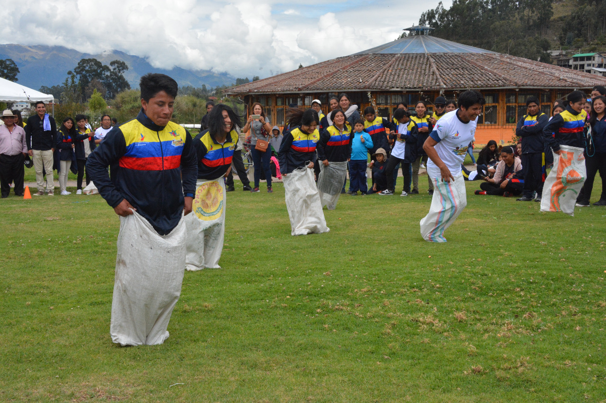
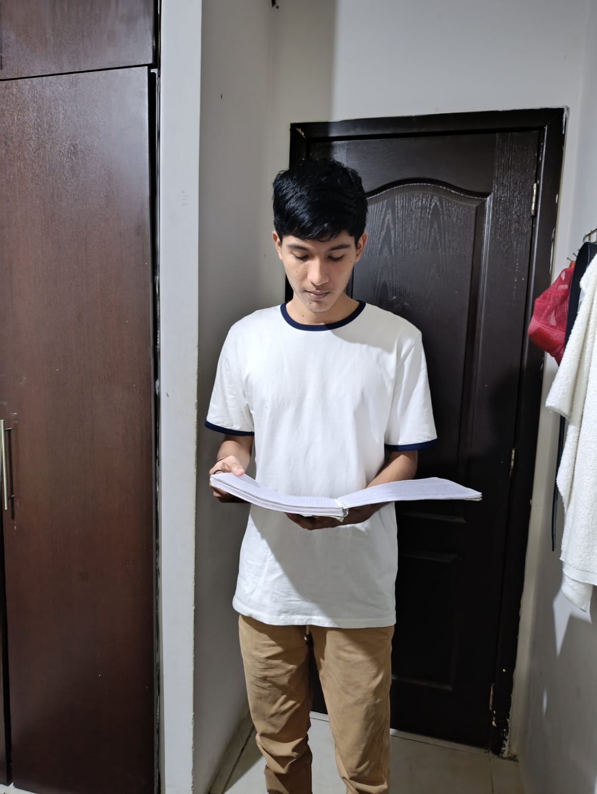
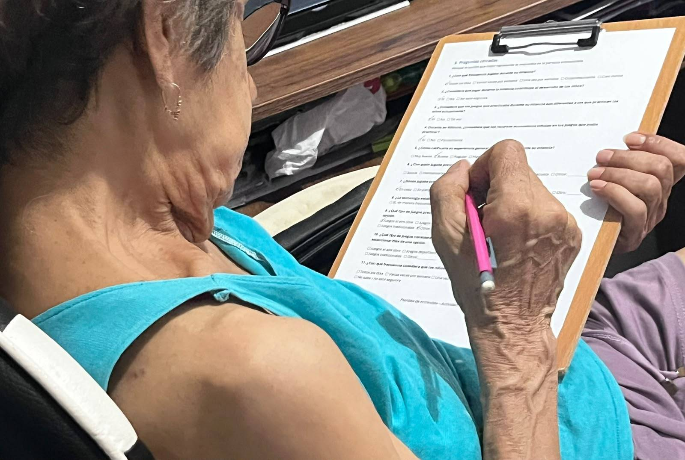
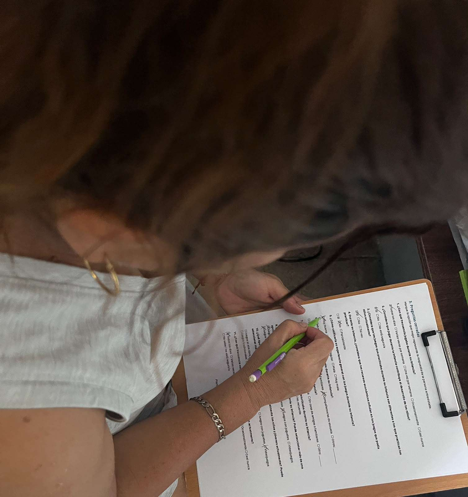
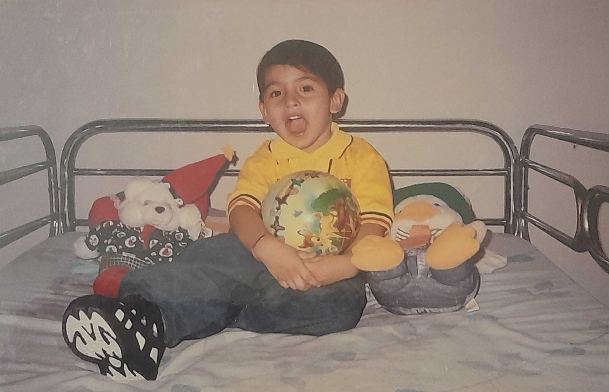
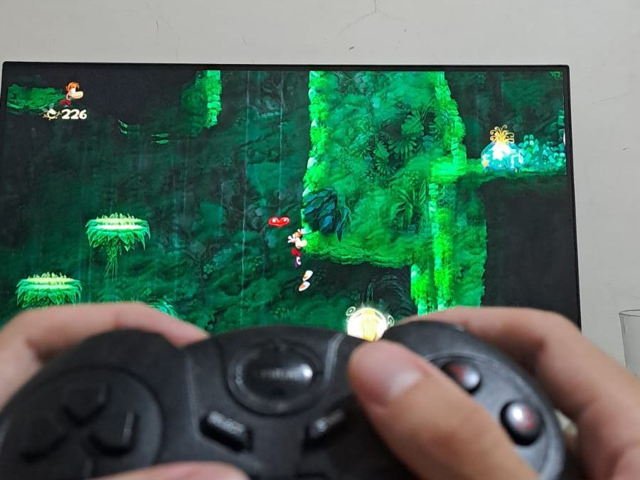
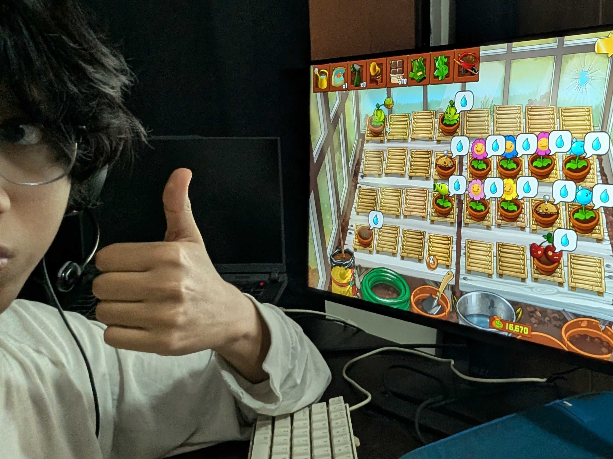
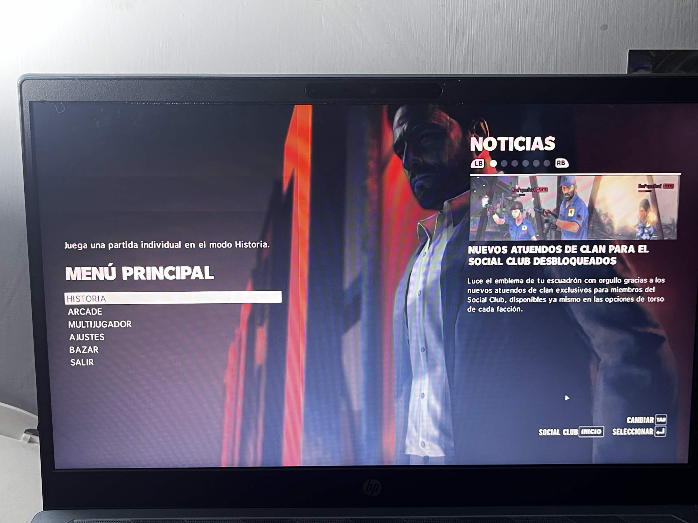
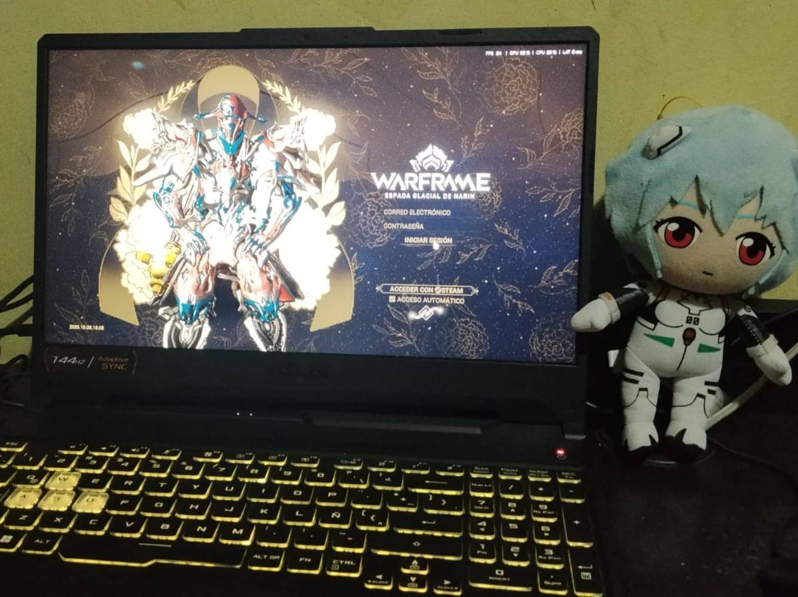
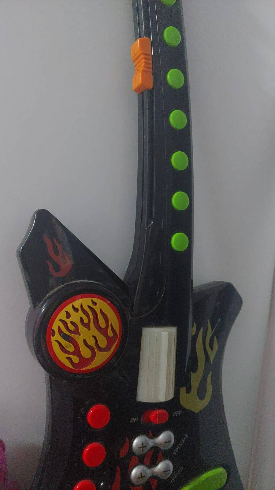

Impacto de la seguridad
Dato clave: 100% de los entrevistados.
Todos coinciden en que la inseguridad actual en Guayaquil limita las actividades y juegos en la calle.

La intención de está página es mostrar el análisis que llevamos a cabo sobre los juegos en distintas generaciones y como afecta la inseguridad del país actualmente en la actividad de jugar y divertirse, motivando más a encerrarse en las casas en vez de salir a la calle y jugar al aire libre.
El estudio se concentró en la ciudad de Guayaquil, abarcando sectores como Málaga 2 y entrevistas en modalidad virtual.
Dato clave: 100% de los entrevistados.
Todos coinciden en que la inseguridad actual en Guayaquil limita las actividades y juegos en la calle.
Dato clave: Alta frecuencia.
Las nuevas generaciones prefieren el uso de videojuegos y pantallas frente a los juegos al aire libre.
Dato clave: En desuso.
Juegos como la rayuela, el trompo y las canicas han sido reemplazados casi por completo.
Demostración visual de las actividades recreativas estudiadas:

"No demonicen el jugar videojuegos siempre y cuando no sea de manera excesiva, ya que pueden beneficiar a los jugadores y ayudar a mejorar en el ámbito personal."
Juego favorito: Counter Strike GO / Fútbol
"En cuestión de juegos físicos influye mucho la seguridad porque no es posible salir con normalidad y puedes estar en el lugar equivocado en el momento equivocado."
Juego favorito: Call of Duty Black Ops II / Fútbol
"Los padres deberían intentar que los niños socialicen más en su niñez y adentrarse en entornos públicos, en lugar de darles tanta tecnología como tablets o celulares."
Juego favorito: Mario Kart 7

"La diferencia es que nosotros no teníamos la necesidad de tener un juguete comprado; con lo que teníamos a mano nosotros mismos lo hacíamos."
Juego favorito: La rayuela

"En mi infancia era más fácil porque los padres o abuelos salían a la calle a cuidarnos. Hoy los juegos de antes como el trompo y las canicas se han perdido."
Juego favorito: Carreras de bicicletas

"Antes los niños salían a hacer deporte o a consolas de alquiler; ahora por la inseguridad esos espacios o negocios ya no existen."
Juego favorito: Hot Wheels / Rayman (PS1)

"Compartir cualquier tipo de juego con un grupo de personas es mucho más divertido y genera mayor satisfacción en la vida."
Juego favorito: Rayman Origins

"Existe mayor preocupación por salir a espacios públicos, por lo que muchas personas prefieren quedarse en casa a jugar videojuegos donde se sienten más seguras."
Juego favorito: Plants vs. Zombies 2

"Fue una etapa muy feliz ya que jugábamos hasta la noche. Hoy en día se ha perdido esa libertad porque es peligroso salir a cualquier hora."
Juego favorito: Las quemadas / Max Payne 3

"No es poco común observar actos criminales en espacios públicos. Esto causa paranoia en los padres, que prefieren que sus hijos se queden en casa por seguridad."
Juego favorito: Las atrapadas / Warframe

"Lo que más disfruto es imaginarme un mundo de fantasía al jugar. Pero ahora en la calle hay muchos ladrones."
Juego favorito: Las atrapadas / Guitarra de juguete
Escribenos tu experiencia!